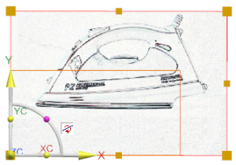

打开 des09_raster_1。
这个部件中包含一个空白的光栅，但是方位错误，您将应用一张熨斗的光栅图形，并将它放置在水平矩形内。
确保使用的角色是具有完整菜单的高级功能。
光标位于光栅图像上时，右击并选择编辑参数。
在平面设置组中，点击指定 TIFF 图像。
浏览至部件文件夹并选择 des09_idss_iron1.tif，然后点击确定。

熨斗图像的主体应该位于如图所示的矩形中。
选择如图所示的旋转手柄，并顺时针拖动，直到光栅图像变为水平，与较小的矩形对齐。

